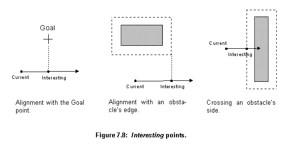

The Router server receives, from its clients, circuits in EDIF format [55] with all components already placed. These circuits are then routed and returned to the client.
The Router server basically tries to mimic the way human designers use a simple CAD (Computer Aided Design) system to route circuits. The designer makes all the important decisions about design, such as where the wires are going to and about the quality of the routing. The designer decides if a subnet is well wired or if it needs rewiring (for instance, because it is blocked). CAD offers the designer a tool to represent and manipulate the design. It embeds tools to change the way wires are connected and to calculate important constraints, such as the size of a wire or process rule transgressions. The designer is in charge of the decision making process and the CAD system offers the medium and facilities to implement his or her decisions (fig. 7.1).
In the Router server, the designer's role is carried out by the RouterExpert agent object and the other agents under its supervision, and the CAD role is carried out by the Design objects.
In addition to holding the design data, the Design object has two groups of methods to performs its other functions: building methods, for changing the design data, and retrieve methods, for collecting information.
For example, there are three methods for searches based on individual characteristics: The getByNumber and getByReference methods that find a component based on its number or reference value, and the getByWire method that returns the component that owns a particular wire.
The two more important spacial relationships are crash and touch. A crash happens when any section of a new wire breaks any design rule in relation to any section belonging to any wire already in the design. A touch happens when a proposed wire section touches any section belonging to any wire in a list, both sections should be in a wiring layer (poly, metal1 or metal2).
The main methods to test the relationships are:
getCrashes methods test if a new wire crashes with any other in the design. They return true if there is a crash. Optionally they can return a reference list pointing to all components (and the wires in them) that crashes with the new wire. These methods can take a list of areas where not to test for crashes, generally these areas cover the attachment points of a new wire.
getCrashesPointer method (fig. 7.3) tests if a pointer, generally created at an edge of a wire, representing a wire, that spreads in a defined direction and has infinite length, crashes with any component in the design. It returns true if there are any crashes and a list with all wires in the circuit that crashed into it. The list elements include the component holding the wire, the wire section where the crash took place and the distance from the vector origin to the crash. This list is ordered by distance, the closest crash report coming first.
getWiringLayersTouchPointer method tests if a pointer with a certain width and infinite length touches any component in a list. It returns true if there are any touches and a list with all wires that touched the vector. Only wiring layers (poly, metal1 and metal2) are considered. The returned list is ordered by the distance from the pointer's origin to the touch point, the smallest first. The list elements hold the component, the wire, the wire's section and the distance for each touching event.
getNetEnvelope method finds a rectangle that contains a net. This rectangle is used to evaluate the size and how big a net is.
getClosestWiringPoints method finds the two closest points between two subnets.
changeLayer method finds a wire that takes another wire from one layer to another. This new wire is usually appended to the old one. First, this method finds the via geometry for changing the layers and includes finding the via layer type (Contact or Via) and the minimum sizes of a sandwich of squares from the two layers and the via in between them (fig. 7.6). This sandwich has to be connected to the old wire. The routine tries to place the sandwich in various positions around the old wire end. To speed up the process, a big sandwich is generated covering the total area where the placements will be tried. Using the method getCrashes, a list pointing to all components (and wires) that crash with this big sandwich is generated. Only the components on this list will then be tested when the method tries to place the small sandwich (fig. 7.6).
makeConnection method tries to connect two wires. If the end of the first wire and the point of connection on the second one are from the same layer, the routine just tries to add a segment connecting the two. If there are crashes it returns false. If the two connection points are in two different layers, the routine tries to add a segment from the first wire to near the place of connection. If this wire segment crashes, smaller ones are tried. At the end of this segment, the routine tries to take the wire to the same layer of the point of contact in the second wire using the method changeLayer. If successful, it adds one more segment to connect the two wires. If there are any obstructions between the two wires the method fails, because it is not supposed to navigate around obstructions.
connectInSameLayer method wires all points that are on the same layer and can be connected using a straight wire without any layer change. The method is called for a specific layer. It tests all nodes, trying to interconnect all subnets that have wires with segments on the target layer. At the early stage of routing the subnets have only the component's terminals, which are very small wires (just one segment), and sometimes a small straight wire connecting two terminals. In a latter stage of routing this kind of extensive search would be too costly.
makeDifusionToMetal1 method adds a wire extension to all subnets that have only diffusion wires to connect them to Metal1. This routine tests all subnets, from all nodes not yet completely routed, and finds the ones using only diffusion layers. It then tries to change them to Metal1 using the method changeLayer.
The combination of the two agents performs an augmented maze route algorithm. Maze routing was first described by Moore [67]. Moore routing is performed over a rectangular grid of cells, with some cells free and others blocked. Basically, the algorithm finds the shortest path between two predefined cells that does not pass through any blocked cell. It begins at a start cell, repeatedly expanding outwards to neighbouring cells until the destination is reached. When the goal is reached the complete path can be tracked back to the start point (fig. 7.7).
Maze routing can be easily generalized, the notion of expanding to neighbours works with any graph, not only with rectangular arrays. The algorithm is almost always enhanced with a cost function, incorporating factors such as preferred routing directions and the cost of layers and vias. Instead of expanding uniformly in all directions, only the most promising, least cost partial path is expanded in each interaction. In place of the shortest path, found in the original form of the algorithm, this enhanced form provides least cost solutions.
Another performance optimization, which can be employed in the algorithm, is expansion directly to the next interesting point [68], where a change in direction or layer is more likely. This saves times skipping over less interesting parts of the layout and, more importantly, by eliminating the need to process data at the costly level of pixels, processing is performed directly on the circuit description held by a Design object.
A point is defined as interesting when it aligns with the goal point, obstacles' edges or crosses obstacles' sides (fig. 7.8). In the case of obstacles, the edge and sides considered are the ones of the area that overlap the obstacle by a margin. This margin is equal to the minimum separation between the layers of the obstacle and the layer of the wire being routed plus half the wire width. In this way, a wire bending in an interesting point does not break any design rule (fig. 7.8). The agents construct wires to the interesting points and analyse the best possibilities from them. They can turn the wire or change layers and then try the next interesting point.

When the RouterExpert agent receives a circuit, it first performs some simple routing. It connects straight diffusion and polysilicon lines and connects all the unconnected diffusion lines to metal1.
connectInSameLayer method to connect points on the same layer which are close to each other. These connections should lie in a straight line. First, the program tries the points on the diffusion layers (pdiff and ndiff). Only this type of connection will be routed in diffusion, abutted transistors (transistors on the same strip of diffusion) will be connected this way. After routing all diffusion links, the program will try to connect polysilicon points. The placement program tried to align the connected gates of transistors, these will be connected now. If, by chance, the program finds other possible short connections, other than abutted MOSFETs and aligned gates, they will be routed this way too.makeDiffusionToMetal1 will be applied to try to extend it into layer metal1 (fig. 7.9). If this change isn't possible the cell can not be routed and an error condition is returned.
connectGeneral method wires all remaining connections. The unwired nodes are put in the Routing Nodes Queue list, ordered by importance and size, smaller nodes coming first. This will help if any rerouting has to take place later. The connectGeneral method uses the connectNode method to connect all members of this list. From this stage on, only the wiring layers, polysilicon, metal1 and metal2, will be used for interconnections.
In a Design object, each node has a list of partially routed subnets (routingNets list). Each list contains at least one wire corresponding to a component terminal. If none of the subnets was wired together all lists will have just this small wire. If they have all been wired, the node will have just one list holding all subnets in its routingNets list.
The connectNode method connects the subnets in a node's routingNets list. It tries to connect each net using the method connectSubnet. If the method can not connect a subnet, the next subnet in the list will be connected and the unconnected subnet will be tried again later. The method returns FALSE if not all subnets are connected together.
The RouterExpert agent controls the population of Connect agents and the way they perform the routing. The idea would be to have a population of Connect agents trying their solutions in parallel. If an individual finds a new interesting point, it reproduces. If it completes a wire it sends it to the RouterExpert agent. If it has exhausted all its options, it dies. The RouterExpert would then take care of this "farm", killing individuals with costly routing and giving more resources to individuals with prospective wires.
Unfortunately parallelism at this level is not available in BSD Unix (Berkeley System Distribution) [70], only in the System V Unix [71] using the threads mechanism. But even in this case, it only would be real parallelism (not just time sharing) if the host machine had more than one processor. For this reason, a system of list queues is used to schedule Connection agent's execution, in a time sharing fashion.
connectSubnet controls the process of routing a subnet. Figure 7.11 shows its data structures, its main constituents are:
CurrentRoutingNode pointer is updated. If a node has to be unwired its position on the list has to be changed and it has to be repositioned after the pointer.
AgentsList when it gets empty.
The main algorithm used by the connectSubnet method is shown in figure 7.12 and described bellow:
agentsQueue list. As long as the agentsQueue is not empty, the algorithm will try to use the agents on it.
agentsQueue is put in the agentsList. As long as the agentsList is not empty, the algorithm runs the agents on it.
agentsList. If the wire being routed by this agent is already too costly the agent is killed. The environment in the Connect agent is set, which means that the agent can initialize any variables or add something to the Design description. The method run is called in the Connect agent.
run method returns, its environment is reset. This allows the agent to undo any modification to the Design description. The agent is subsequently killed. If the agent has found any new wire, it sent it back to the RouterExpert agent using the method tryAsBestWire. If it has created new Connect agents, they were either added to the lists agentsQueue, if they ask for other nets to be unwired, or to agentsList if they do not ask.
agentsList is empty. It then restores any unwired node from the stack. If a suitable wire is found, the process stops. If no wire is found the cycle continues until there are no Connect agents left in the agentsQueue.
Routing Nodes Queue. They will be rewired later. If no suitable wire has been found the order of the subnets is inverted and the process is repeated, this time from the bigger net to the smaller.
tryAsBestWire. The method will test whether the cost of this wire is smaller than the current best one (if there is one). If the new one is cheaper, it will become the new best. The method also tests whether the new wire has a cost very near the cost of the minimum wire. If so, the search stops.
When a Connect object has the path of its wire obstructed by a wire belonging to a node different from the one it is currently routing, it creates a new Connect agent, which asks for that wire to be removed, and sends it to the RouterExpert agent. This new agent is sent to the AgentsQueue (fig. 7.11). The agents in the AgentsQueue are used only if a wire that does not need any unwiring is not found, or if this wire is very costly (at least twice the cost for the subnets' average wire). Because rewiring is so expensive it is only tried when all agents that do not ask for it (the ones in the agentsList) have been tried.
When a new Connect agent is added to the AgentsQueue, the program determines which nodes will have to be unwired as a result of the removal of the wire that is blocking that particular agent path. The node, that the wire belongs to, and all nodes wired after it, that share any common area with it, have to be completely unwired. Nodes sharing areas with these unwired nodes have to be unwired as well. For instance, if the nodes were wired in the order A, B and C; A had to be unwired and B occupies an area that overlaps A's. B will have to be unwired and C will be left intact only if it shares area with neither A nor B. The Connect agents are added to the AgentsQueue ordered by the number of nodes that they are asking to be unwired, the smaller numbers (cheaper ones) coming first.
All this care has to be taken because the wiring of a node reflects in the wiring of the other nodes connected after it. If only the wire that is blocking a path is taken out, other wires, in the same node or from other nodes, could have had their shape heavily influenced by that wire. For instance, they could have changed layers to avoid the wire, and if this wire is then deleted and rewired, it can now follow another route and leave an unnecessary change of layer in the design. The only way to ensure that such situations do not take place is to unwire not only the blocking wire but all wires that could have had any topological conflicts with it. Some other less "radical" methods, such as recursive rerouting [48], would fail when using more than two layers for routing.
Figure 7.12 shows a possible error due to partial rewiring. The Net #3 wire, left side of the figure, was fully blocked by Net #1 and Net #2 wires. The program then removes the piece of Net #1 wire that is blocking the way (marked by dotted lines). The routing of Net #3 proceeds to completion, and Net #1 is rewired (right side of the figure). What happens then is that Net #1 rewires the removed piece in another layer, to cross over Net #2 and Net #3 layers. This leaves Net #2 with a useless piece of wire (marked by dotted lines), making a bridge over a no-existing obstruction. In this case, the two nets, Net #1 and Net #3, have to be rewired to avoid the mistake.
After unwiring a node, the RouterExpert moves it from its original position in the Routing Nodes Queue, to a position after the current node being routed. In this way, the node will eventually be rewired. To avoid loops where A asks B to be unwired and then some time later, when B is being rewired, it asks A to be unwired, a node that unwires another during its routing, can not be unwired.
When a Connection agent is created it receives data from its parent about its "mission". This data includes: where the Connection agent is in the design, where it should go and the wire segment it already holds. The agent then remains dormant, either in the RouterExpert's agentsQueue or agentsList, until the RouterExpert runs it.
When the Connection agent begins to run, it first checks out its environment and finds out in what direction the target point for its wire is. With this information it plans which of its four operators will be activated first. It feeds them into the Options list, a list that holds operators to be applied, and applies the operators in the list until it is emptied. The applied operators can trigger other operators to be applied (adding them to the Options list). As a result of the operators actions, the agent can extend its wire to other interesting points, create new Connect agents and propose new best wires to the RouterExpert agent. When the agent has tried all possibilities (it emptied the Options list), constrained by its environment and knowledge base, it halts and its run method returns.
Change Layer operator, which is the only one to do the final connection to the target net. This operator will be introduced in a separate section, the other three are:
changeLayer from a Design object to make the change. On failure it just returns the message "can't change".
Go to XY - It tries to extend the current wire for a specified distance in a specified direction. After changing the wire's direction it finds the dimensions of the wire's section that should be added and uses the Design object method getCrashes to test if the new section fits in place (figure 7.13, left). In case of failure it returns "can't go".
Get Round - It tries to go round a specified obstacle in a specified direction. The direction should be parallel to one side of the obstruction. The operator will look for an interesting point: the place where a pointer, which has its origin at the current wire's end and points parallel to the specified direction, aligns with the obstacle's edge (plus a separation margin). It will then find the dimensions of a corresponding wire segment which would fit from the end of the wire to the interesting point and will use the Design object getCrashes to test if this new section fits (figure 7.13, right). In case of failure it returns "can't get".

If successful all three operators add the new section to their wires and create a new Connect agent to work on this new interesting point. When they create new Connect agents they send them to the RouterExpert to the agentsList. They do not create agents that ask for nets to be unwired. If unsuccessful all operators return messages that can be used by the Connect agent to trigger the activation of other operators.
Change Direction operator is Connect agent's most important object because it probes the space in defined directions, looking for a connection in the target net or for obstructions. It gathers information that can be used to activate other operators.
When this operator is used it receives a pointer with the direction it should probe into, its vector direction. It then uses the Design object method getWiringLayersTouchPointer (fig. 7.3) to test if a pointer, with the same width and layer type as its last wire segment and pointing in its vector direction, touches any wire in the target subnets (or any other subnet belonging to the same node). If the result of this test is negative, the operator uses the Design method getCrashesPointer, to detect any crash in the operator's vector direction. If there is a crash the operator will add to the Options list the operator Goto XY in the crash's direction up to the crash's point edge (fig. 7.14, middle). If the operator's vector aligns with the Goal point (fig. 7.8, left) it adds another operator Goto XY to the Options list, to add a new segment extending the wire up to the alignment point (fig. 7.14, left). The operator returns the message "No touch".
If there is a touch in one of the target subnets the operator uses the Design object method makeConnection to try to make a connection. If there is a connection, the resulting wire is sent to the RouterExpert agent as a possible best wire (fig. 7.14, right).
If there is no connection the operator uses the Design method getCrashesPointer, to detect any crash in the operator's vector direction. If there are no crashes it returns the message "Can't make connection" and, as before, if the operator's vector aligns with the Goal point (fig. 7.8, left) it will add an operator Goto XY to the Options list. If there are crashes the operator tries the following series of operations to overcome the obstructions between its position and the target subnet:
agentsQueue list.
Get Round to try to pass around the obstruction (fig. 7.15, left). It will return the message "Full blocked".
Goto XY to get close to the point of obstruction (fig. 7.15, middle). It will return the message "Blocked".
Goto XY operator to get to the point of alignment (fig. 7.15, right).
If the operator Change Direction manages to make a connection it returns the message "Success".
Options list. One way of adding operators to the list is through the operator Change Direction, as explained in the last subsection.
The other way, as explained earlier, is when the Connect agent begins to run and survey its environment. The operators chosen, to be added to the Options list, depend mainly on the last operation performed by the parent of the Connect agent prior to its creation. For instance, if the last action was an operator Goto XY to approach a obstruction, Get Round operators will be added to the Options list to try to overcome the obstruction.
In addition to any operator dictated by the surrounding environment, on all occasions, the algorithm will add to the Options list: Change Layers operators to the agent's wire adjacent layers (for instance poly to metal1), and at least two Change Direction operators going each to one of the possible directions (north, south, east and west).
The rules in the Connect agent knowledge base try to strike a balance between the number of particular cases they take into consideration and the likelihood of any of the particular cases leading to a perfect wire. Here, some examples of the special circumstances the knowledge base analyses have been illustrated, but there are others. Many more will be added as the program matures.
In summary, the basic behaviour of each Connect agent is to try to extend the wire it has inherited from its parent. This continues until no operators are available in the Options list. The agent's job is to try all reasonable possibilities for expanding the wire. The task of the RouterExpert agent is to restrain the Connect agents, promoting the ones that found a good path, in such a way that the program finds a good solution in a reasonable amount of time.
The interaction of these two types of agents creates the final routing, as shown in figure 7.16. This routing is subsequently sent back to the Router server's client. Similar to the Placer server, the Router on success sends back the design, as an EDIF command, otherwise it sends the message (LIST SORRY).
Next
Contents
Talk to me